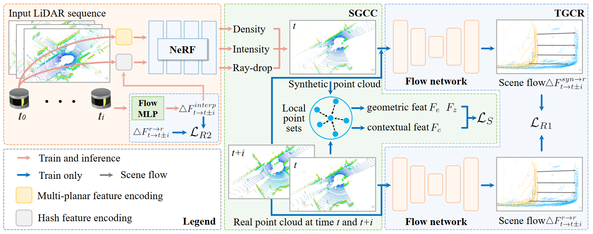

About Me
I am currently a Ph.D student (since 2021) at spAtial Sensing and Computing Lab (ASC) in Xiamen University supervised by Prof. Cheng Wang. Before that, I spent a three-year M.S. study in Xiamen University supervised by Profs. Jonathan Li and Zhenlong Xiao. My interests focus on LiDAR Localization and LiDAR Segmentation.
Recent News
- [2025.09] One paper got accepted by NeurIPS2025.
- [2025.07] One paper got accepted by MM2025.
- [2025.06] One paper got accepted by ICCV2025.
- [2025.02] One paper got accepted by CVPR2025.
- [2024.12] Two papers got accepted by AAAI2025.
- [2024.11] Honored with the National Scholarship.
- [2024.08] One paper got accepted by TITS.
- [2024.03] Two papers got accepted by CVPR2024.
- [2023.10] One paper got accepted by TITS.
- [2023.03] One paper got accepted by CVPR2023.
- [2021.08] One paper got accepted by TITS.
- [2021.05] One paper got accepted by TGRS.
Publications
* denotes equal contribution.



Crack-U2Net: Multiscale Feature Learning Network for Pavement Crack Detection From Large-Scale MLS Point Clouds
IEEE TITS


Services
-
Journal Reviewers:TPAMI, TOG, TITS, TGRS, GRSL, JAG.
-
Conference Reviewers:CVPR, ICCV, NeurIPS, ICML, ICLR, AISTATS.
Concat
-
Email:liwen777@stu.xmu.edu.cn, wen.li.sd95@gmail.com.